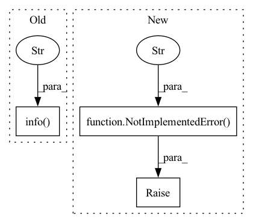

Pattern ID :9613
Before Change
update all online model predictions to the latest day in Calendar
mu = ModelUpdater(self.exp_name)
cnt = mu.update_all_pred(self.online_filter)
self.logger.info(f"Finish updating {cnt} online model predictions of {self.exp_name}." )
class RollingOnlineManager(OnlineManager):
def __init__(self, experiment_name: str, rolling_gen: RollingGen, task_pool) -> None:After Change
raise NotImplementedError(f"Please implement the `prepare_new_models` method.")
def update_online_pred(self, *args, **kwargs):
raise NotImplementedError(f"Please implement the `update_online_pred` method." )
def set_online_tag(self, tag, *args, **kwargs):
raise NotImplementedError(f"Please implement the `set_online_tag` method.")
In pattern: SUPERPATTERN
Frequency: 3
Non-data size: 3
Instances Fragment ID: 34714859
Project Name: microsoft/qlib
Commit Name: 46cd57688e0c9229067fd028396ecc66cf40a0c0
Time: 2021-03-25
Author: lzh222333@163.com
File Name: qlib/workflow/task/online.py
M Class Name: OnlineManager
N Class Name: OnlineManager
M Method Name: update_online_pred(1)
N Method Name: update_online_pred(1)
M Parent Class: Serializable
N Parent Class:
M File Name: qlib/workflow/task/online.py
N File Name: qlib/workflow/task/online.py
M Start Line: 111
M End Line: 115
N Start Line: 31
N End Line: 32
Before Change
self.embedder_type == "positional")
self.view_embedder, self.view_embed_dim = get_positional_embedder(self.view_multires,
self.embedder_type == "positional")
log.info(f"Position Embed Dim: {self.pos_embed_dim}" )
log.info(f"View Embed Dim: {self.view_embed_dim}")
def init_decoder(self):
Initializes the decoder object. After Change
elif embedder_type == "positional":
embedder, embed_dim = get_positional_embedder(frequencies=frequencies)
else:
raise NotImplementedError(f"Unsupported embedder type for NeuralRadianceField: {embedder_type}" )
return embedder, embed_dim
def init_decoders(self, activation_type, layer_type, num_layers, hidden_dim):
Initializes the decoder object. Fragment ID: 34714858
Project Name: nvidiagameworks/kaolin-wisp
Commit Name: 688dfebfd03fbfa81560f103244bc7e776e47245
Time: 2022-12-20
Author: 9556101+orperel@users.noreply.github.com
File Name: wisp/models/nefs/nerf.py
M Class Name: NeuralRadianceField
N Class Name: NeuralRadianceField
M Method Name: init_embedder(3)
N Method Name: init_embedder(1)
M Parent Class: BaseNeuralField
N Parent Class: BaseNeuralField
M File Name: wisp/models/nefs/nerf.py
N File Name: wisp/models/nefs/nerf.py
M Start Line: 34
M End Line: 42
N Start Line: 65
N End Line: 76
Before Change
self.pos_embedder, self.pos_embed_dim = get_positional_embedder(self.pos_multires,
self.embedder_type == "positional")
log.info(f"Position Embed Dim: {self.pos_embed_dim}" )
def init_decoder(self):
Initializes the decoder object.
After Change
elif embedder_type == "positional":
embedder, embed_dim = get_positional_embedder(frequencies=frequencies, position_input=position_input)
else:
raise NotImplementedError(f"Unsupported embedder type for NeuralSDF: {embedder_type}" )
return embedder, embed_dim
def init_decoder(self, activation_type, layer_type, num_layers, hidden_dim):
Initializes the decoder object. Fragment ID: 34714861
Project Name: nvidiagameworks/kaolin-wisp
Commit Name: 688dfebfd03fbfa81560f103244bc7e776e47245
Time: 2022-12-20
Author: 9556101+orperel@users.noreply.github.com
File Name: wisp/models/nefs/neural_sdf.py
M Class Name: NeuralSDF
N Class Name: NeuralSDF
M Method Name: init_embedder(4)
N Method Name: init_embedder(1)
M Parent Class: BaseNeuralField
N Parent Class: BaseNeuralField
M File Name: wisp/models/nefs/neural_sdf.py
N File Name: wisp/models/nefs/neural_sdf.py
M Start Line: 103
M End Line: 108
N Start Line: 54
N End Line: 65